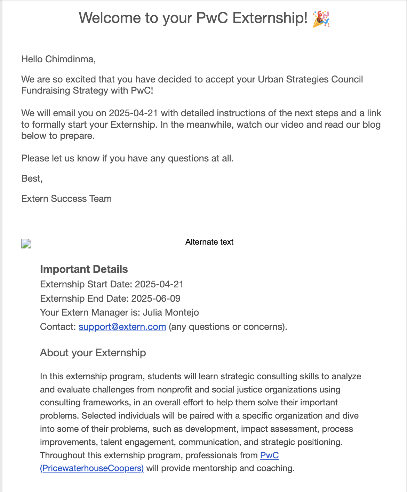
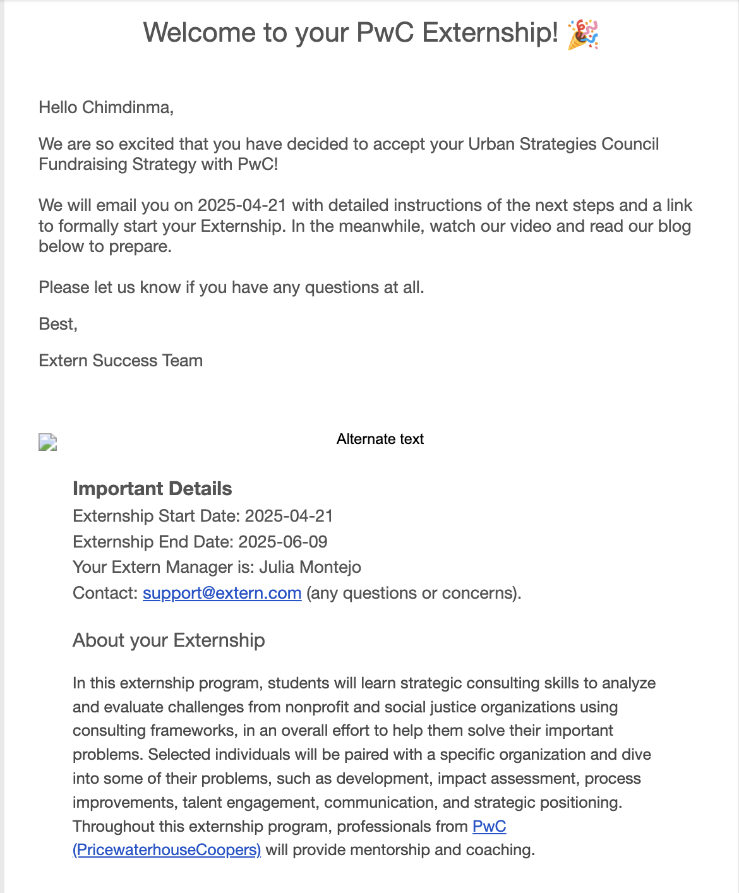

Software Engineering Intern
Meta (Meta University)
Engineered full-stack features for Meta’s Horizon OS developer tooling and built FitSync , an AI-enhanced MERN fitness tracker with secure auth and real-time device sync.

Hello, I'm
Software Engineer
I build practical, user centered software with a focus on AI, full stack development, and real world impact.


Experience
2+ years
Software Development
Education
B.Sc Computer Science · B.Sc CyberSecurity
Grambling State University (2024–2028)
I’m a Computer Science and Cybersecurity double major at Grambling State University, building full-stack applications that are practical, scalable, and intuitive. I work across the entire stack, but I enjoy the creative side of development — designing interfaces, shaping user experiences, and bringing ideas to life with clean, thoughtful execution. Outside of engineering, I have a strong creative streak. I paint, draw, read, play chess, watch sports, and unwind with my PS5. Those interests keep me curious, balanced, and open to new ways of thinking — qualities that shape how I learn and build. I also explore cloud computing and the security foundations behind it as part of strengthening my broader technical skill set. I’m excited to keep growing as an engineer by taking on challenging projects, collaborating with talented teams, and expanding my experience across full-stack development, design, and security.
Meta (Meta University)
Engineered full-stack features for Meta’s Horizon OS developer tooling and built FitSync , an AI-enhanced MERN fitness tracker with secure auth and real-time device sync.
Phillips Consulting Limited
Improved automated test reliability and collaborated with developers to resolve compatibility issues.
Google & BASTA
Participating in a Google-led technical and professional development program focused on DSA mastery, mock interviews, and career preparation for competitive SWE roles.
Black Enterprise & American Airlines
Developed and pitched a technical solution at the BeSmart Hackathon, placing 4th out of 62 teams across 43 schools in a fast-paced, collaborative competition.
Code2040
Currently part of the Code2040 Fellowship, gaining mentorship and technical interview preparation.
NVIDIA
Participated in an intensive introductory program focused on CS fundamentals and technical readiness.
AT&T
Completed AT&T’s Technology Academy, gaining hands-on experience with networking, cloud systems, and modern telecom technologies.
HBCUvc
Participated in HBCU Startup School over the summer, learning startup fundamentals, MVP design, and entrepreneurial problem-solving.
Urban Strategies Council
Contributed to equity-focused consulting projects by analyzing community data, generating insights, and supporting research for impact-driven initiatives
Grambling State University
Supported students in introductory Python, debugging code and explaining core programming concepts.

Remote • Jun 2025 - Aug 2025

Remote • Sep 2025 - Sep 2026
 

Remote • Apr 2025 - Jun 2025
SafeLink Mesh AI is a comprehensive offline-first mesh networking system designed for disaster relief and emergency communications. When traditional internet infrastructure fails, SafeLink enables peer-to-peer communication, emergency alerts, and relief coordination through Bluetooth Low Energy (BLE) and WiFi Direct mesh networks.
FitSync is a web-based fitness tracking application that allows users to log meals and workouts, visualize their nutrition intake and calorie output, and stay consistent with fitness goals. It solves the problem of overwhelming or paywalled fitness tools by offering a clean platform powered by real food/exercise data via the Nutritionix API.
Flixster is a responsive movie discovery web application built with React and The Movie Database API. The app allows users to browse current movies in a dynamic grid layout, search by title, and sort results by release date, rating, or alphabetical order. Each movie card displays key details and opens a modal with extended information, including runtime, genres, overview, and backdrop imagery. The project emphasizes accessibility, semantic HTML, responsive design, and clean user interactions while demonstrating real-world API integration, state management, and component-driven UI development.
VisionCare is a lightweight web application inspired by the EyecareLive Vision Test, designed to help users assess their visual acuity from home using a laptop or desktop paired with a smartphone. The application guides users through the testing process and allows them to securely save and view their test results. It’s intended as a preliminary screening tool, NOT a replacement for a full eye exam.